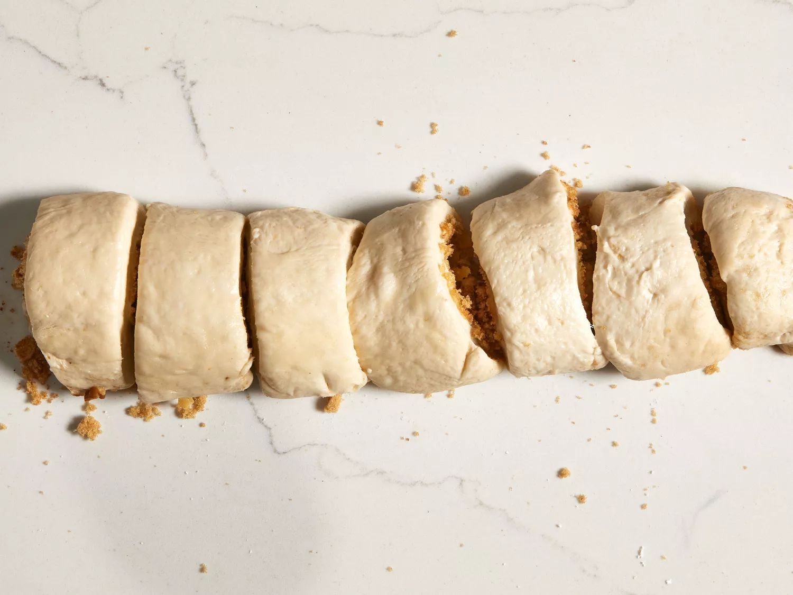

Cinnamon Rolls

These easy cinnamon rolls are simple to make using prepared bread dough for a quick and delicious breakfast treat. They have a buttery cinnamon filling and are topped with a sweet glaze. Super yummy and gone in a flash at my house!
Ingredients
- 1 (1 pound) loaf frozen bread dough, thawed
- 3 tablespoons butter, melted
- ⅔ cup brown sugar
- ½ cup chopped walnuts
- 1 teaspoon ground cinnamon
- 1 teaspoon water, or as needed
- ⅓ cup heavy whipping cream
- ⅔ cup sifted confectioners' sugar
- 2 tablespoons milk
- 1 dash vanilla extract
How to Make It
Here's a detailed, step-by-step recipe on how to make this delicious dish!
- Step 1: Gather all ingredients and lightly grease 2 round cake pans with butter.
- Step 2: Roll bread dough out to an 6x18-inch rectangle. Brush with melted butter.
- Step 3: Combine brown sugar, walnuts, and cinnamon in a small bowl; sprinkle over butter.
- Step 4: Roll dough into a log, starting at the long edge. Moisten edge with water and seal.
- Step 5: Cut log into 20 slices; arrange rolls, cut sides down, in prepared cake pans. Cover with a towel and let rise in a warm place until doubled in volume, about 90 minutes. 
- Step 6: Preheat oven to 350 degrees F (175 degrees C). Pour heavy cream over dough.
- Step 7: Bake in preheated oven until golden brown, about 25 minutes.
- Step 8: Mix confectioners' sugar, milk, and vanilla extract in a small bowl; drizzle over warm cinnamon rolls to serve.
- Step 9: Enjoy!
Nutritional Facts
Per serving:
- 157 Calories
- 6g Fat
- 23g Carbs
- 3g Protein